Vienna Offline Finals
Vienna Offline Competition Introduction
This page introduces the Vienna offline finals workflow, onsite arrangements, and schedule reference for the ICRA real-robot stage.
Official Onsite Guide (Primary Reference)
For the complete and official onsite competition instructions, please refer to:
Vienna Offline Workflow
The main process of the Vienna onsite competition is shown below:
{kind=link}

Onsite Competition Overview
The Vienna offline finals follow the real-robot evaluation format and focus on end-to-end execution quality, including:
Task completion correctness
Stability and safety of robot operation
Efficiency under round-based time constraints
Reproducibility across multiple evaluation rounds
Teams are expected to prepare a deployable inference pipeline that can run reliably in the onsite environment.
Onsite Schedule
The official Vienna onsite timeline (check-in, test slot, formal evaluation, and result announcement) is maintained in the organizer document:
Please use that PDF as the final source of truth for exact times and room arrangements.
Submission and Evaluation Notes
The Vienna offline stage uses the real-robot submission and execution principles consistent with the real-robot track documentation.
For code packaging, deployment conventions, and scoring interpretation, refer to: